SIH26098 · Yantra India Limited · design review for the professor
The whole design, end to end. The physics behind each component, every component itself, the 86-second flight with its sensor timeline and ballistic phases, the flight algorithm, the guidance-navigation-control stack, then honestly: what is novel, what we credit to others, and what we deliberately exclude.
Claim: CEP ≤ 30 m at maximum-range full charge, against a
267 m unguided baseline.
Register state: 195 criteria · 47 defined · 37 derived · 25 parametric · 86 open.
Prepared 2026-09-23 · every number on these slides carries the criterion ID that owns it.
Four status words, one authority order, and a map of the forty slides.
| Claimed | A requirement or design decision we own. |
| Derived | Computed from the givens. The arithmetic lives in the register row. |
| Parametric | Sized over a declared envelope from public data, because YIL releases drawings only after shortlisting. Every such value re-baselines at P6. |
| [ref] | Carried from published work on the 155 mm class (Günay 2022 and its sources). Provisional until confirmed on our shell. |
| Open | Orange everywhere in this deck means a decision or measurement still owed. Never a claim. |
The criteria register is authoritative. The CAD and the architecture atlas are evidence; where they disagree with the register, the register wins and the drawing is wrong. Slide 34 shows exactly that happening: the CAD measured masses three times the register's assumption and nothing was silently resolved.
| 03–04 | The problem and the claim |
| 05–06 | What the kit is, and what fits where |
| 07–14 | Physics and components, one slide each: principles, canards, machine, bearings, sensors, fuze, power and electronics |
| 15–22 | The whole trajectory: phases, activation timeline, what each phase changes |
| 23–27 | Flight logic and the GNC stack, then guidance, control and navigation in depth |
| 28–30 | Error budget, thin margins, and the 121 kJ thermal story |
| 31–33 | Novelty, competitors, exclusions |
| 34–38 | Open findings, the edit list, risks, validation, and the questions we want your judgment on |
| 39–40 | Number sheet and sources |
Criterion IDs in mono blue, like C42, point at the row in design/00-design-criteria-register.md that owns the number. The register is 195 rows deep; this deck is its argument, not its proof.
Unguided 155 mm fire is a volume problem, and the volume is set by how dispersion grows with range.
A conventional unguided round at maximum range lands with a circular error probable of 267 m M6. Two independent public citations bracket it at 259 m and 139 m, the lower figure being the shorter-range M795. Convert to the 1-D sigma the budgets use and σ = 267 / 1.1774 = 227 m.
For a 90 % probability of defeating a 30 m effective-radius target from one aimpoint: ≈ 264 unguided rounds against 4 guided ones M8. The fielded kit's own published comparison is 301 → 77 rounds, a 74 % expenditure reduction; we quote our figure beside it, never instead of it.
What is missing. YIL makes the shell. The shell is accurate to nothing in particular at 30 km. The missing capability is the kit that screws into its fuze well and corrects the trajectory, which is what this project builds.
Stated so it can be tested, with its dependencies published instead of hidden.
| Element | Statement | ID |
|---|---|---|
| Claim | CEP ≤ 30 m, and the fraction of rounds within 30 m published alongside it | M4 M5 |
| Condition | Maximum-range, full charge (6M), 30 km class from a 39-calibre tube. Mid-band results are supporting data, not a second claim | M4 |
| Definition | 2-D circular 50 % radius, CEP = 1.1774 σ, measured against the loaded aimpoint | M5 |
| Excluded | Target-location error is outside the claim and published as a separate sensitivity (0 / 10 / 25 m). The kit does not get to assume the crew's coordinates are right | M5 R5 |
| Charge envelope | Safe, stable and functional across charges 3M–6M, 546–943 m/s. Outside the claim band accuracy degrades but never below unguided | M3 |
| Range retention | > 90 % of the conventional round's maximum range. Accuracy may not be bought with range | M10 |
| Derived design point | CEP 23.9 m — a 20 % margin under the claim | G4 |
The kit cannot correct every round, so the requirement is written as a capture fraction: how much correction captures 80 % of the unguided population. For a Rayleigh radial distribution,
407 m of impact-point correction, equivalent to 19.0 m/s of velocity change. The 50 % population would need only 267 m and buys nothing over unguided; 90 % would need 487 m, beyond what the hardware can deliver M7.
Honesty rule for this deck. A 30 m CEP with no condition attached is the first thing a reviewer discounts. The claim carries its engagement condition, its definition, and the term it excludes. The requirement is a 30 m figure, so we publish the tail — the fraction of rounds breaching 30 m — not just a median inside it.
It replaces the fuze and the ogive forward of it. Nothing else on the round is touched, which is the whole compatibility argument.
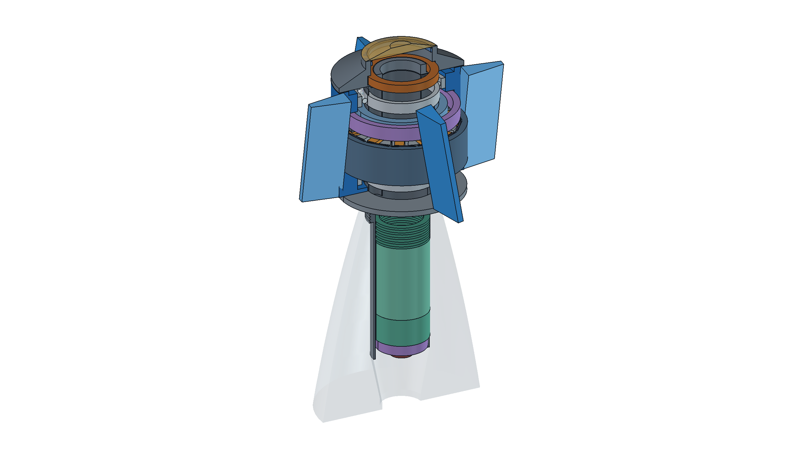
The kit replaces a ≈ 0.98 kg fuze, so the honest figure is the net penalty. Against the fielded kit: total mass lands at 1.0–1.21×, and the net penalty over the fuze replaced is 1.55–2.2× its +0.45 kg P9. Both ratios, always together — quoting only the flattering one is the trap panels look for. Net CG shift ≈ 6–8 mm forward (≈ 0.8 % of projectile length), inside the platform's own 0.55–0.62 L spread P10. And see slide 34: the CAD's measured rollup is well above this band and is an open finding.
Why retrofit and not a new round. The stockpile becomes precision-capable at the point of firing, through the same gun line, the same charges and the same crews. The customer buys a kit through the channel that already buys its fuzes.
Three bodies, one reserved centreline, and every cubic millimetre argued over.
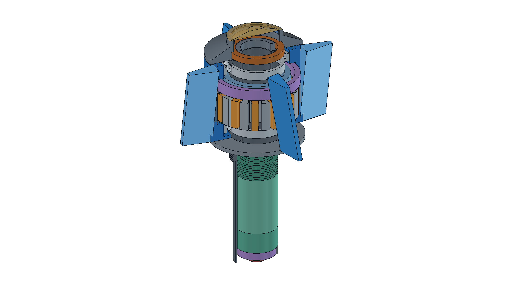
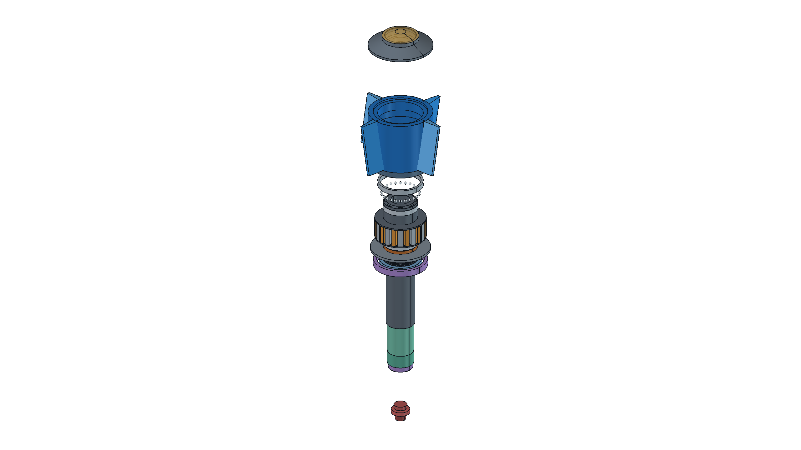
| Body | Behaviour |
|---|---|
| Shell + kit body + nose | Rigidly joined, spins with the body at 176.3–304.4 Hz S6. Carries the stator, the fuze, the electronics. |
| Canard ring | De-spun on two bearings, free to rotate about the roll axis within ±31.42 rad/s. Carries the canards and the alternator magnets. |
| Reference shell | Untouched. Draws the ogive envelope the kit must live inside P8. |
Canard tips are capped at Ø151 mm because the bore is 155.0 mm and the shell body already occupies 154.89 mm of it: 2 mm of side clearance, 26.5 mm of exposed span C31.
Six principles. Every component in the next eight slides is an application of one of them, and every requirement traces to the same short list.
| Principle | What it says | Where the design uses it |
|---|---|---|
| 1 · Gyroscopic stabilisation | A spinning shell resists overturning through angular-momentum conservation; the stability factor Sg compares that resistance to the aerodynamic overturning moment. Spin comes from the rifling: p = 2πV / twist. | The shell flies straight unguided S1, and the kit's canards are capped because they raise the overturning moment S2. Muzzle stability is charge-independent S6. |
| 2 · Canted-surface force decomposition | A fixed surface at incidence δ to the flow produces a normal force F = q · S · CNδ · δ. Two equal-canted surfaces add forces and cancel torques; two opposite-canted ones cancel forces and add torques. | The whole steering concept: one pair makes the guidance force, the other makes the roll torque that aims it C1. No moving surface exists. |
| 3 · Dynamic pressure sets the window | q = ½ρV². Both the canard force and the ring's aerodynamic torque scale with q, so control authority is large early and late and collapses near apogee. | The guidance window is state-dependent, not scheduled G3; 18.1 N closes only above q ≈ 23 kPa C8 C31. |
| 4 · Generator reaction torque (Lenz) | Drawing current from a machine in motion creates a torque opposing that motion: T = Kt·I while E = Kv·ω. Loading the machine is steering; the same load is also the flight power supply, P = T·ω. | One machine is actuator, generator and power plant at once C14 C20. The bill is the 2.92 kW it must absorb C42. |
| 5 · Rolling contact and friction | Bearing friction rises with speed and load; preload buys stiffness and costs friction and heat, with a known thermal runaway path at high speed. | Friction is the feasibility gate of the whole ring architecture C12 C13, and preload is a three-way trade C23. |
| 6 · Heat leaves through joints, not surfaces | Conductive contact resistance dominates metal-to-metal joints; heat flux crowds near fasteners, and a thin compliant interlayer changes conductance by an order of magnitude more than clamping force does. | 121 kJ of control energy exits through the fuze-well interface, which is therefore specified as ≥ 58 W/K rather than inherited from a thread W7 P6. |
The one criterion that could veto the architecture is stability, because canards ahead of the centre of gravity are destabilising by construction.
Over the envelope (mass 43–47 kg, inertia bands calibrated on published mass-property data, CMα bracketed 3.7–4.8): Sg spans 1.37 to 3.55, design point 1.83 S1. The customary floor is 1.3–1.5.
Because Sg ∝ 1/CMα and the canards sit forward of the CG, the kit is allowed to raise CMα by ≤ 5 % at the conservative envelope corner (40 % at the design point) S1 S2. That 5 % is the stability budget the canard designer spends against, and it is why the design's lever is cant angle, not canard area.
Two results that run in our favour. The ring and canards at body radius add ≈ +5.4 % to Ixx, which raises Sg by ≈ 11 % and partly pays for their own destabilising effect P11. And because spin is fixed by the rifling twist (1 turn in 20 calibres), p/V is constant, so muzzle Sg is charge-independent: a 3M and a 6M round leave the tube equally stable S6.
S8 · roll–coning resonance. The published work on this exact configuration reproduces a resonance instability: the canard disturbance couples with the projectile's natural frequency and drives ballistic fluctuation. S1 is a gyroscopic criterion at the muzzle and does not answer it. The literature's own fix is reduced canard span with increased deflection, which raises the pitching-moment derivative and the natural frequency — exactly where this design already landed (Ø151 mm span cap, cant as the lever). S8 asks for the evidence at P3 rather than a redesign. Open, risk 41.
| Point | Spin | Source |
|---|---|---|
| Launch, charge 3M | 1 107.5 rad/s · 176.3 Hz | S6 |
| Launch, charge 6M | 1 912.3 rad/s · 304.4 Hz | S6 |
| Design point at launch | 1 623 rad/s (≈ 15 500 rpm) | [ref] |
| Impact, t = 86 s | ≈ 1 050 rad/s | [ref] |
Confirmed independently: a 1:20 cal rifling check predicts both charge cases exactly (p = 2πV/twist), which is the one platform quantity the public record corroborates outright.
Four fixed-incidence canards in two pairs on the de-spun ring. No moving control surface exists anywhere in the kit.
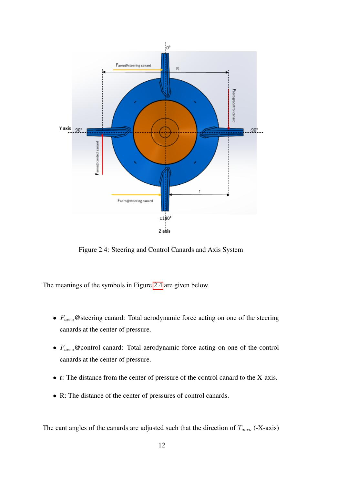
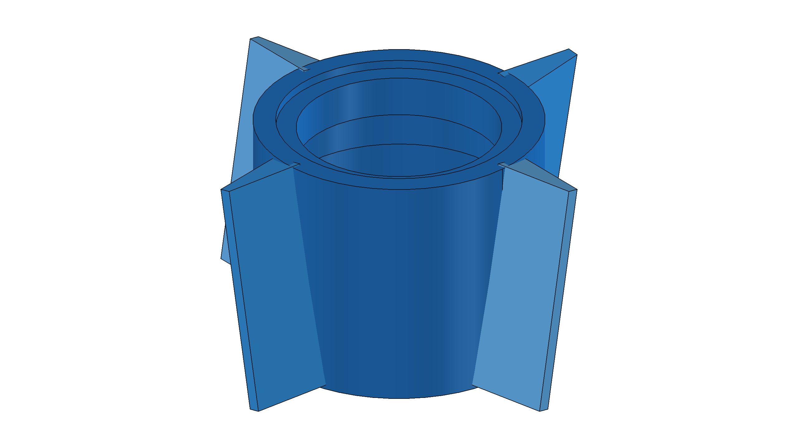
| Pair | Geometry | Force | Torque |
|---|---|---|---|
| Steering 0° / 180° | equal cant | components add → net force 2·F·sin δ | roll torques cancel |
| Control 90° / −90° | opposite cant | components cancel | components add → net roll torque |
Rotating the ring rotates the force vector in the plane: two-dimensional steering from a single actuation axis C1. The command is a ring angle and nothing else, because steering comes from cant rather than deflection: the force magnitude is set by cant and dynamic pressure and the ring can only aim it G2.
The control pair is load-bearing, not decorative: the machine's reaction torque acts in one sense only, so the control pair's aerodynamic torque is the only source of ring torque in the opposite sense. Without it the ring has half its command range.
A frameless outrunner PMSM whose rotor is the canard ring itself. Loading it is how the kit steers; the load is also where flight power comes from.
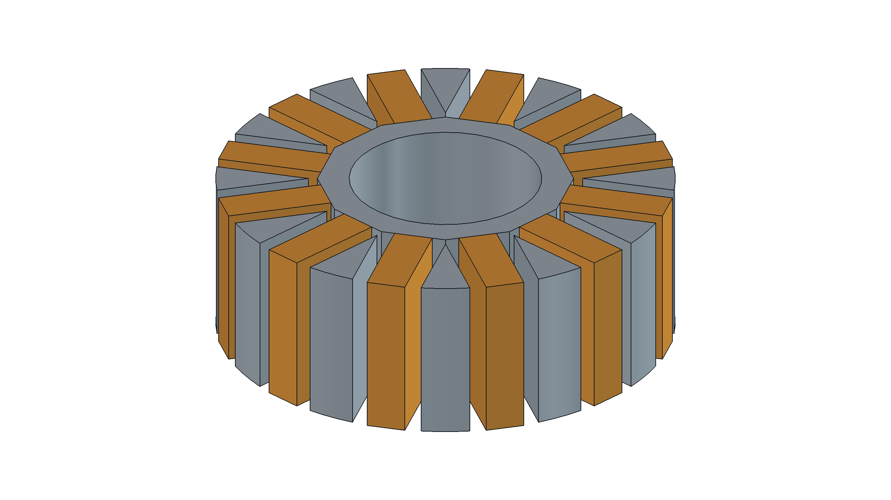
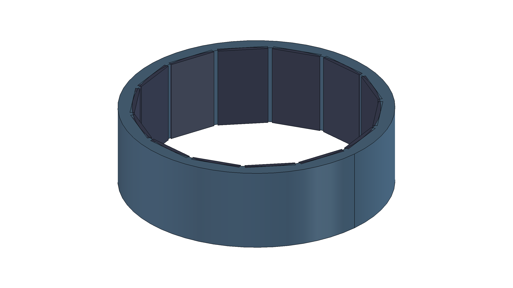
Current-carrying conductors in a magnetic field experience the Lorentz force; integrated around the air gap it becomes torque T = Kt·I. The same rotation induces a back-EMF E = Kv·ωrel, and the induced current's own field produces a reaction torque opposing the relative motion (Lenz's law). So drawing current brakes the ring — that braking is the control input — and the drawn energy is real electrical power, P = T·ωbody.
| Parameter | Value | ID |
|---|---|---|
| Topology | radial-flux, 3-phase, frameless outrunner (magnets on ring) | C34 |
| Slots / poles | 12 / 14 (p = 7), kw 0.933 | C36 C16 |
| Mid-gap diameter / air gap | ≈ 79 mm / 0.400 mm | C35 |
| Stack length | 25–30 mm (nominal 28) | C34 |
| Torque constant Kt / voltage constant Kv | 0.362 N·m/A rms / 0.209 V/(rad/s) LL | C14 C15 |
| Peak / holding current | 15.9 A (7.5 A/mm²) / 6.5 A (3 A/mm²) | C18 |
| Max torque / rating | 5.76 N·m / ≈ 3.0 kW | C19 C20 |
| Electrical frequency at launch spin | 2 130 Hz | C39 |
| Mass | 0.81–0.97 kg | C40 |
The ring is only controllable if the aerodynamic torque beats the friction torque. That single inequality decides whether this architecture exists.
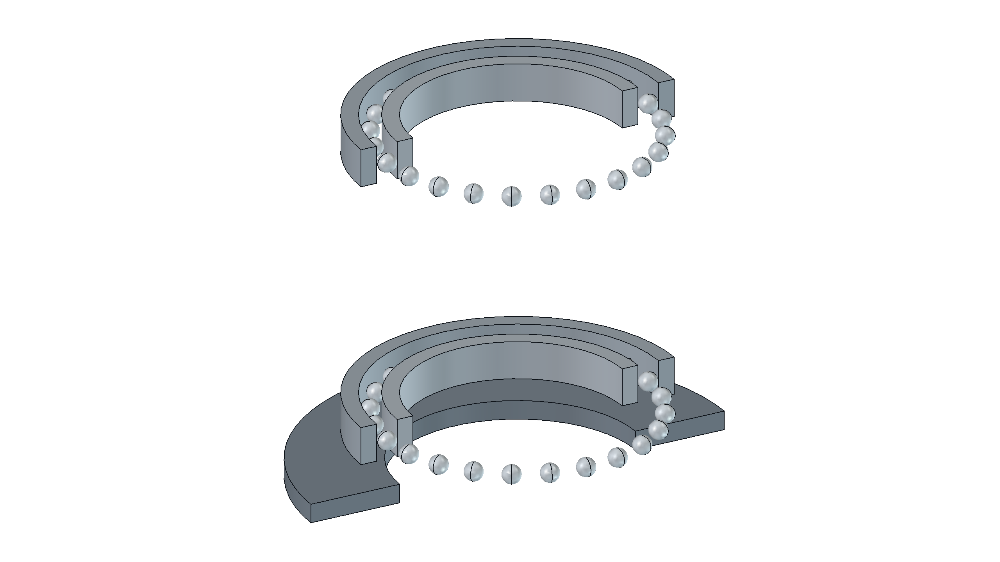
Taero is the control pair's aerodynamic torque (unavoidable, tracks q). Talt is the machine's reaction (controllable). Tf is bearing friction. To have any authority against the aero torque you need Taero > Tf, and near apogee Taero falls to 0.1706 N·m C12.
Combining the two sizing criteria — need Taero > Tf at apogee, and Taero ≤ Talt_max/2 + Tf at descent — closes the control-pair sizing window entirely above Tf = 0.1567 N·m. At the measured 0.1 N·m the window is a narrow ±20 % of the reference's control-pair size C12. Friction is therefore a feasibility gate on the architecture, not a number to minimise.
| Requirement | Value | ID |
|---|---|---|
| Friction torque, flat over speed and temperature | ≤ 0.10 N·m to ≈ 1 900 rad/s | C13 |
| Bearing pair radial stiffness | ≥ 122 N/µm | C35 |
| Structural path stiffness (axial) | ≥ 367 N/µm | C35 |
| Setback load routed around the bearings | 73.5 kN at 0.5 kg ring | C26 |
The hardest sensing problem in a spin-stabilised guided shell is solved twice by geometry — and that is what makes cheap COTS sensors sufficient.
| Sensor | Physical principle | How the spin problem is handled | Spec / note | ID |
|---|---|---|---|---|
| GNSS aperture (multi-constellation) |
L-band carrier tracking and code phase; position from pseudo-range multilateration. | A rotationally symmetric aperture on the spin axis, elements combined rather than switched: the pattern is invariant under rotation, so the spin produces no modulation by symmetry. Only slow coning remains, which a standard loop absorbs. Standard receiver, no redesign. | Acquisition is a requirement: fix in the opening seconds, enabled by pre-loaded ephemeris and keys. A ring-mounted aperture is refuted — the ring angle is the guidance channel. | N3 F12 |
| Ring-mounted IMU | Coriolis vibratory rate sensing and MEMS accelerometer; attitude from integration with aiding. | Spin is removed mechanically: the unit rides the de-spun ring and sees coning (a few rad/s) plus its own slew (±31.42 rad/s limit) instead of 1 107–1 912 rad/s. | ±2 000 °/s, ≥ 100 Hz, ARW ≤ 1 °/√h, bias ≤ 5 °/h — tactical/industrial MEMS. A body-fixed unit would need 92 880 °/s; no COTS part exists. | N6 N7 N8 |
| Magnetometer | Earth's field direction gives absolute heading (the ring angle's earth reference). | Fused into the navigation filter. The alternator's field is rejected at its measured frequency and compensated against measured coil current (slide 27). | Requirement is disturbance rejection, not resolution: ≤ 1.0° (1σ) after filtering. | G6 N12 F15 |
| Ring pickoff | Inductive or optical edge sensing of ring-to-body angle. | Body-side, so it measures exactly the relative quantity the control loop needs. | ≤ 0.8° (1σ) relative. Second, different-physics pickoff as targeted redundancy. | G5 N10 |
| Spin channel | Rate from the same pickoff geometry. | One sensor, three consumers: limit laws, the EMI notch, and the nav filter. | Range 1 050–1 912 rad/s relative. | N9 H6 |
| Barometer | Piezoresistive pressure → density altitude for the aero model. | Unaffected by spin. | Density reference is the environment model; the sensor is a selection item. | N11 |
| 24 GHz RF Doppler (proximity fuze) |
Doppler shift fd = 2·vr·f0/c on the ground return gives range rate; burst height from the return's amplitude/threshold behaviour. | Spins with the body at 176.3–304.4 Hz, so the ground return is amplitude-modulated. The detection scheme shall reject that spin modulation, or the round bursts at the wrong height. | 24 GHz chosen to be clear of GNSS (1.2/1.5 GHz) and of the machine's 2.1 kHz content; radome passes L-band and 24 GHz together. | F2 F3 |
Timing. One hardware counter is the kit's clock; every sample is stamped at conversion (≤ 100 µs) and GNSS labels the epoch without steering the clock, so timing survives jamming and outages H6 N15. Ring-side data crosses the joint on an optical channel (immune to the machine's fields) with power on a rotary transformer H7.
Three modes with real setting envelopes, and safety that is mechanical before it is electronic.
| Mode | Setting | Notes |
|---|---|---|
| Proximity | burst height 2–15 m | 24 GHz RF Doppler through the nose radome; ≈ 7 m default |
| Time | 0.1–199.9 s, 0.1 s steps | crystal reference, re-synchronised in flight from the nav solution |
| Impact | superquick / ≈ 0.05 s delay / graze | full terminal-effect envelope of the fuze replaced is retained |
Set over the in-service inductive gun-line setter to NATO AOP-22: 100 kHz carrier, 1 000 bit/s, a 275 ms forward window, read-back verify, crew go/no-go and a target sanity check against the firing solution F11 F12. The read-back is AOP-22's own error-detection mechanism, so it is compliance rather than invention — and the mission package must be counted against ≈ 550 bits of standard budget (risk 44).
In-flight time correction — credited, not claimed. AOP-22 Annex E.16 registers the XM8 course-correction time fuze, which already corrects its time in flight. What is ours is narrower: the correction is driven by our own continuous navigation solution, in a bounded, one-way, arming-gated form. A guided round's flight time is changed by the guidance itself, so a pre-set time would inherit the whole time-of-flight prediction error F1.
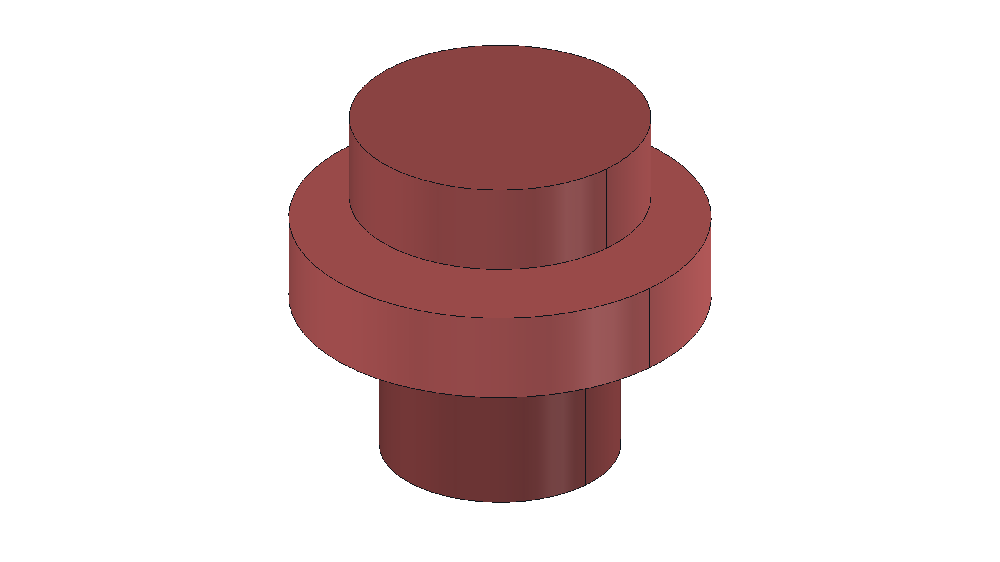
The fielded kit withholds detonation when it expects to miss by more than 150 m. We adopted the same property, and the mechanism is the arming logic we already have: when the predicted impact is still beyond 150 m at the moment the guidance can no longer change the outcome, the kit withholds the electrical arm command — latched, irrevocable, and the failure direction is a dud F16. Cost stated: a prediction error can dud a round that would have landed acceptably (risk 40), and the dud-rate target must now carry this deliberate contribution.
Self-generated flight power, two processors with one physical boundary, and the block diagram the problem statement asks for.
One chart with everything that varies with time: the arc, the authority window, the ring's aerodynamic load, and the generated power. Anchor points are cited; the curves between them are schematic.
Sixteen subsystems across seven flight phases, wired by the real interfaces. This is the "which sensor activates at which point" question, answered as a matrix.
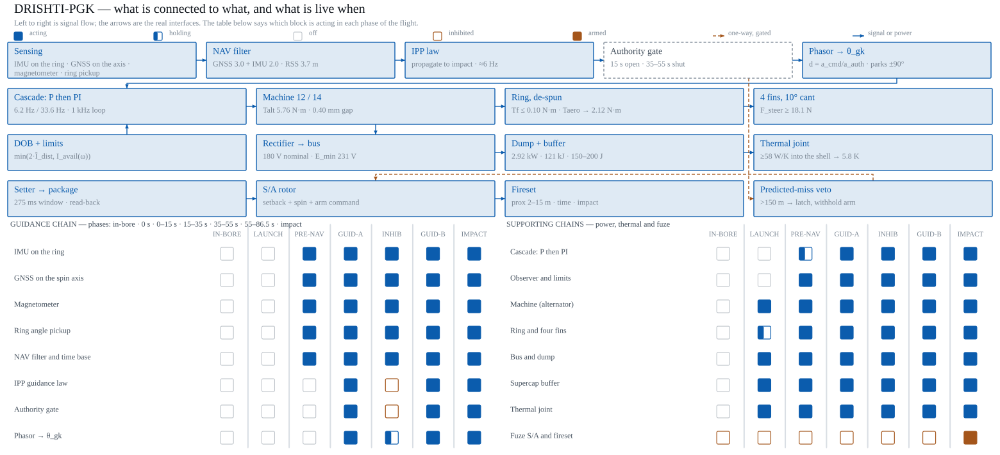
What happens to the round, and what the kit does about it, in order.
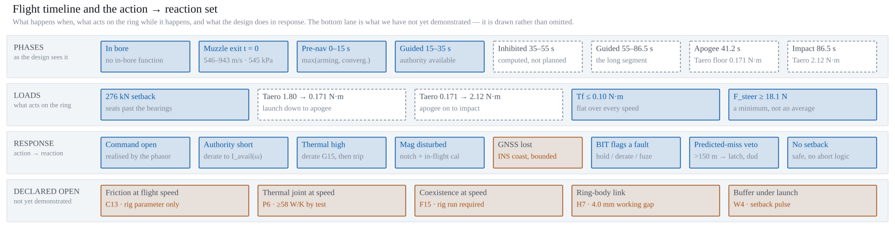
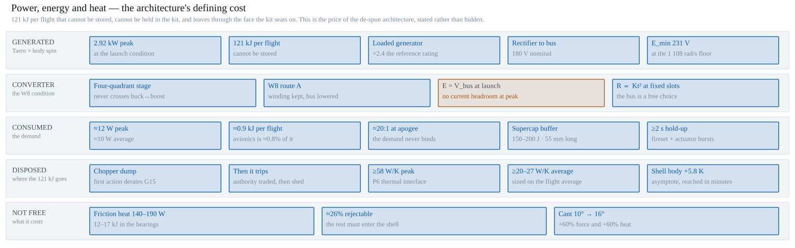
The kit goes from inert package to armed, powered and measuring inside two seconds, in an environment of 15 000 g.
The guided phase does not open on a clock. It opens when two independent conditions are both satisfied.
The gate opens at max(fuze arming distance, navigation convergence) — placeholder t ≈ 15 s, provisional on F8 and N2/N3 G3. Nav convergence is the binding one: the 5 m navigation allocation is a GNSS-availability claim, so guidance waits for the fix.
All the time — from t = 0 — the 1 kHz cascade on the M4F core has been closing the ring angle, with the disturbance observer estimating the unmeasurable aerodynamic and friction torques and the limit law bounding current and rate from those estimates and the measured relative speed. Guidance only ever sets a position reference.
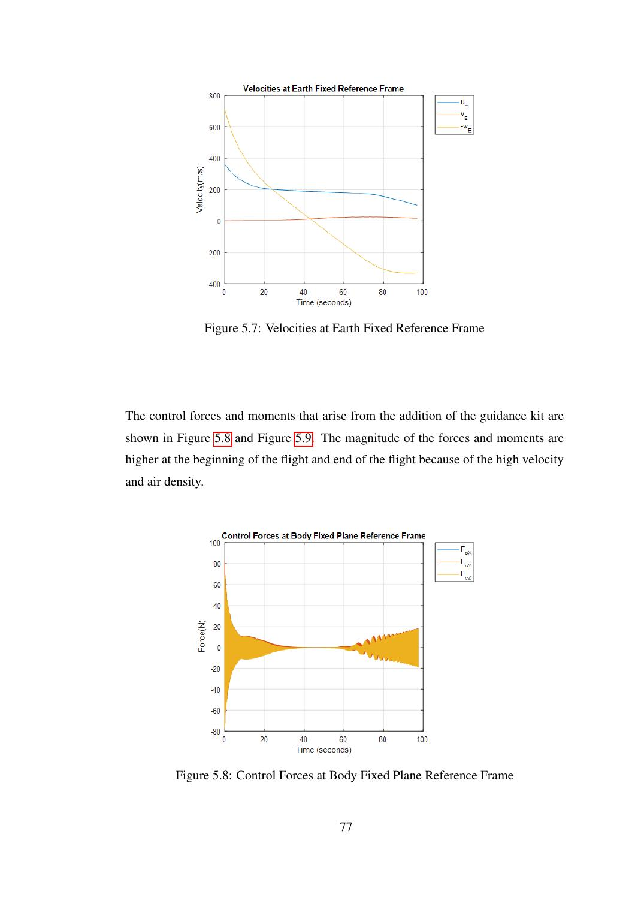
Two obligations riding on this phase. (1) The steering force is always on — "not correcting" is impossible with fixed-canted canards — so the propagation model must include it or the error budget's largest term is wrong (risk 18). (2) The phasor's commanded wobble (±1.3 m/s class in the predecessor study) must be modelled inside the propagation and subtracted, because the law steers the mean trajectory G4.
The kit cannot steer here. The design's contribution is knowing that in flight, instead of discovering it at t = 30 s the way the reference did.
The failure this prevents. Replaying the real flight profile with fixed saturation limits, the reference work lost control between t = 30 s and 50 s: Taero was too small to slow the ring, so it overshot to ≈ 5.5 rad against a 2.4–3.9 rad reference and escalated toward full rotation. The available alternator current itself falls with relative speed (≈ 10 A at launch → ≈ 5 A at apogee), so a constant limit is wrong by construction. Our limits are state-dependent everywhere — and the gate means the law never commands into the dead zone in the first place G15.
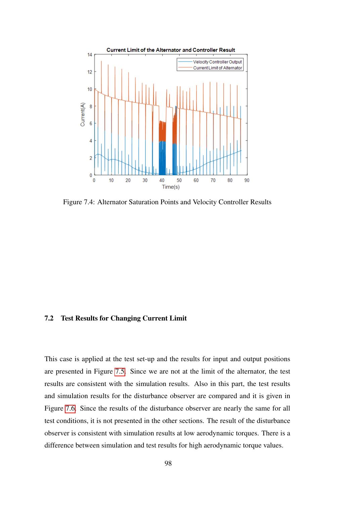
Authority returns, the fuze gets its final answer, and the round does what it was told at the gun line.
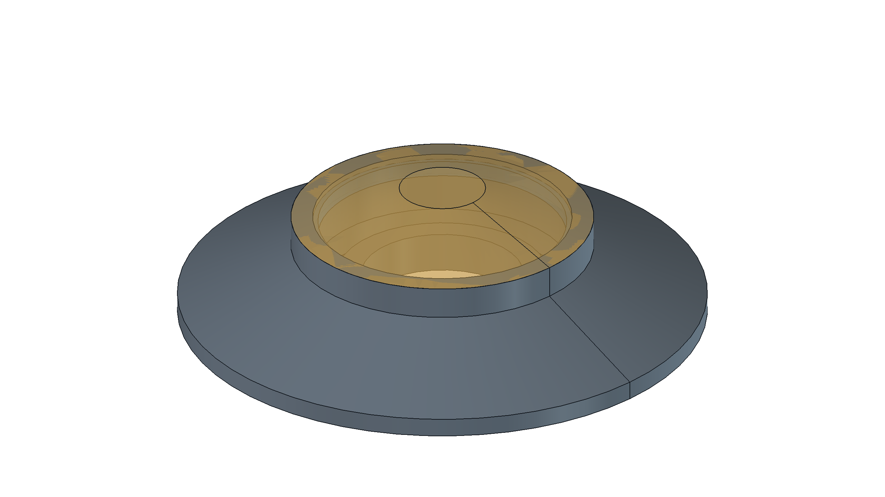
Every sensing and power-producing element, when it turns on, at what rate, and who consumes it.
| Element | Turns on | Rate / duty | Consumers | What it changes when it arrives |
|---|---|---|---|---|
| Setter coil (inductive) | gun line, before loading | 100 kHz carrier, 1 000 bit/s | fuze MCU (always-alive domain) and the kit computer, each listening independently | Loads the mission package and the pre-set time; read-back and go/no-go happen here |
| Reserve battery domain | always alive pre-launch | ≲ 1 W | fuze logic, arming path, setter front end | Hands over at muzzle exit through a diode-OR and stays the fuze's own supply |
| Machine (generator) | muzzle exit, t = 0 | 2.92 kW peak → 0.24 kW floor | bus, dump, buffer | Flight power exists; the buffer and dump start work immediately |
| Ring pickoff + spin channel | from spin-up in the bore (valid after engraving) | 1 kHz, loop side | M4F control loop (G5), limit laws (G15), EMI notch (F15), nav filter | Closes the ring-angle loop; makes every limit measurable instead of modelled |
| Ring IMU | muzzle exit, across the optical link | ≥ 100 Hz (200 Hz design) | M7 navigation filter | Attitude and gap-filling with the spin already removed mechanically |
| GNSS front end | after hand-over; fix in the opening seconds | 5–15 Hz solutions | navigation filter; authenticated via the crypto engine | Opens the guided phase (with arming distance): nav convergence is the gate's binding condition at ≈ 15 s |
| Magnetometer | with the nav set | ≥ 100 Hz, band ≤ 50 Hz | nav filter (absolute ring angle, G6) | Earth-referenced heading; without it the ring-angle line costs ≈ 1.9 m of the budget |
| Barometer | with the nav set | ≈ 10 Hz | environment / aero model (density) | Tightens the q estimate that the authority gate depends on |
| Coil-current and bus sensing | from t = 0 | 1 kHz, loop side | limit law (G15), F15 current compensation, H8 current loop | Turns the limit law and the magnetic calibration into measured, not assumed, behaviour |
| 24 GHz Doppler front end | terminal window, duty-cycled | ≈ 1.5 W when active | fuze MCU only | Proximity mode becomes available; spin-modulation rejection is the requirement |
| Thermometry (dump + interface) | from t = 0 | slow | dump protection (H9), limit multiplier to the guidance law | Can deliberately trade guidance authority for thermal margin before it ever trips |
| BIT (pre-launch + in-flight) | gun line, then continuous | POST, then classify | crew go/no-go; then hold / derate / fuze-autonomous | Every fault class leaves a mode no worse than unguided R4 |
The software's whole job is one rule: whatever fails, the round must end up no worse than unguided.
| Mode | Entry condition | Behaviour |
|---|---|---|
| Safe / pre-launch | on the gun line | Reserve domain only. Setter programming, read-back, pre-launch go/no-go. No path to the initiator is complete. |
| Armed, sensing | setback and spin stimuli seen, arm command issued after interlocks | S&A rotor in line; loop running; navigation acquiring; guidance inhibited by the authority gate until nav converges. |
| Guided | arming complete and nav converged and gate open (q above floor) | IPP at ≈ 6 Hz commands ring angles; phasor realises them; limits bound every actuation. |
| Coasting in the band | gate computes insufficient authority | No commands, ring holds, prediction and logging continue. |
| Endgame | last usable window | Final corrections; F16 decision; fuze time re-synchronised; proximity detector on. |
| Function / dud | per mode setting, or failsafe | Burst as set, or a latched dud on predicted miss. Fuze autonomous in either case. |
| Response | What it does | When |
|---|---|---|
| Hold | Last valid ring-angle command is held | Transient guidance/nav fault the filter can bridge |
| Derate | The limit law's multiplier lowers the current limit — authority traded for margin, and the guidance law is told, so it spends the remaining authority knowingly | Thermal margin loss, or supply limitation H9 |
| Fuze-autonomous | Guidance stops correcting; the fuze functions on its pre-set time and its own sensors | Unrecoverable guidance-domain fault F1 |
Note what is absent: there is no shutdown response. In flight it would have nowhere safe to go, and it would violate the rule rather than satisfy it. The reserve and arming path sits outside the guidance domain's fault set by construction — separate MCU, separate power, optical isolation — so a guidance fault can never reach the firing chain H10 H12.
The acceptance test. Every fault class is checked against the rule "no mode may be worse than unguided" R4. That is also why the predicted-miss failsafe withholds the arm command rather than adding any new mechanism to the explosive train: its failure direction is a dud, like every other safety decision in this design.
Five layers, each with its own rate, its own processor, and its own error allocation. This is the architecture the CEP claim rests on.
| Layer | Rate | Input → output | Where |
|---|---|---|---|
| 1 · Mission data | once, at the gun line | setter package → target, met, charge state, time base, keys | reserve domain |
| 2 · Navigation | |||
| · sensor fusion (EKF) | ≥ 100 Hz | IMU + GNSS + magnetometer + baro + spin → nav state and covariance | M7 core |
| 3 · Guidance | ≈ 6 Hz (≤ 10 Hz ceiling) | nav state + target + aero model → predicted impact point → ring-angle reference θgk | M7 core |
| 4 · Allocation | per guidance cycle | θgk + available authority → dwell-fraction phasor (aim azimuth, duty) | M7 core |
| 5 · Control | 1 kHz | angle error → P over PI cascade → converter current setpoint, inside state-dependent limits | M4F core |
| Actuation | continuous | current → machine torque → ring angle; the force direction follows the ring | hardware |
The split is deliberate. Control timing on a dedicated core with hardware-timed sampling (HRTIM → ADC → DMA) is independent of the guidance load; the guidance deadline is one propagation per ≈ 0.17 s interval instead of a hard 1 ms H1 G13. Overruns degrade gracefully: the law skips an interval rather than disturbing the loop.
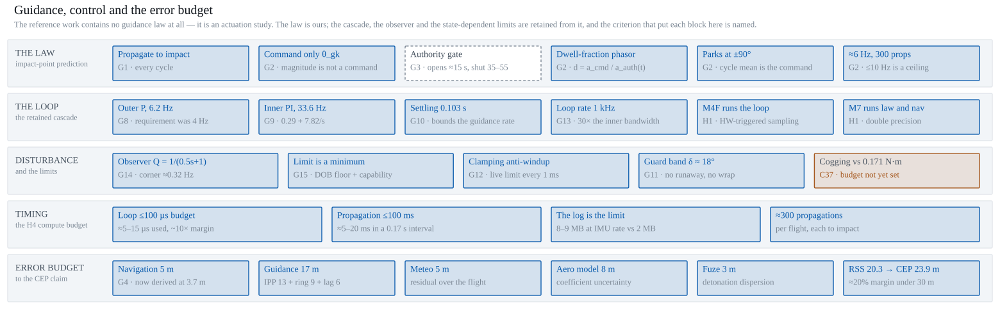
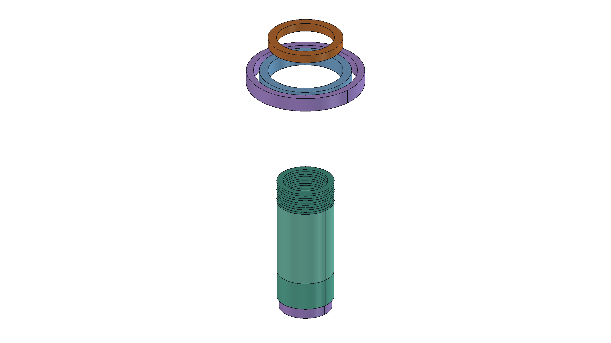
The law is published prior art for this airframe. What we add is the gate that makes it work on hardware that loses authority near apogee.
The cycle length is bounded below by the outer loop's 0.103 s settling (the ring must settle inside each dwell) and above by the 0.17 s guidance interval. The predecessor study ran this form over 250 Monte-Carlo flights and closed its accuracy gate with the duty peaking at ≈ 0.71 G2.
Not claimed: IPP itself. Zhang, Yao & Zheng (Chinese Journal of Aeronautics, 2019) publish impact-point-prediction guidance for a dual-spin projectile with fixed canards — this exact airframe. Claimed: the state-dependent authority gate and the layered limit law that make the law usable where the published bench work lost the ring, plus the propagation obligations (always-on force, phasor wobble) that the published form does not carry G1 G3 G15.
Load it implies: ≈ 300 propagations per flight, each an integration to impact, budgeted at ≤ 100 ms against a ≈ 0.17 s interval and estimated at 5–20 ms H4. Roughly 2–7 % of the M7 core's time averaged.
Hardware-validated in the reference work, and the one part of this design that has already been shown to behave on a bench.
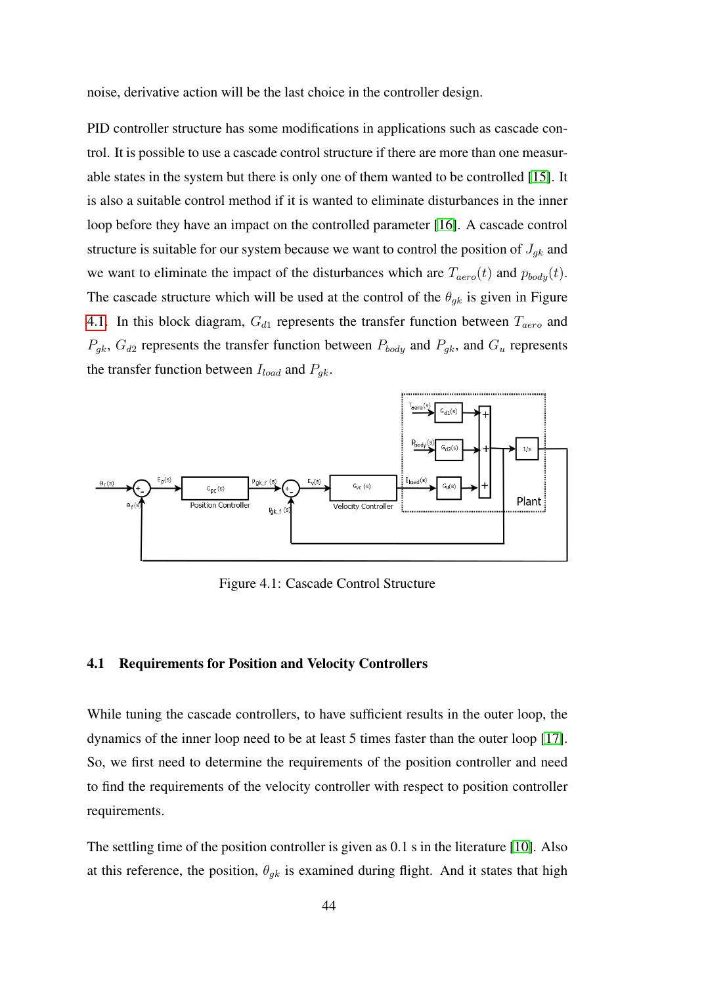
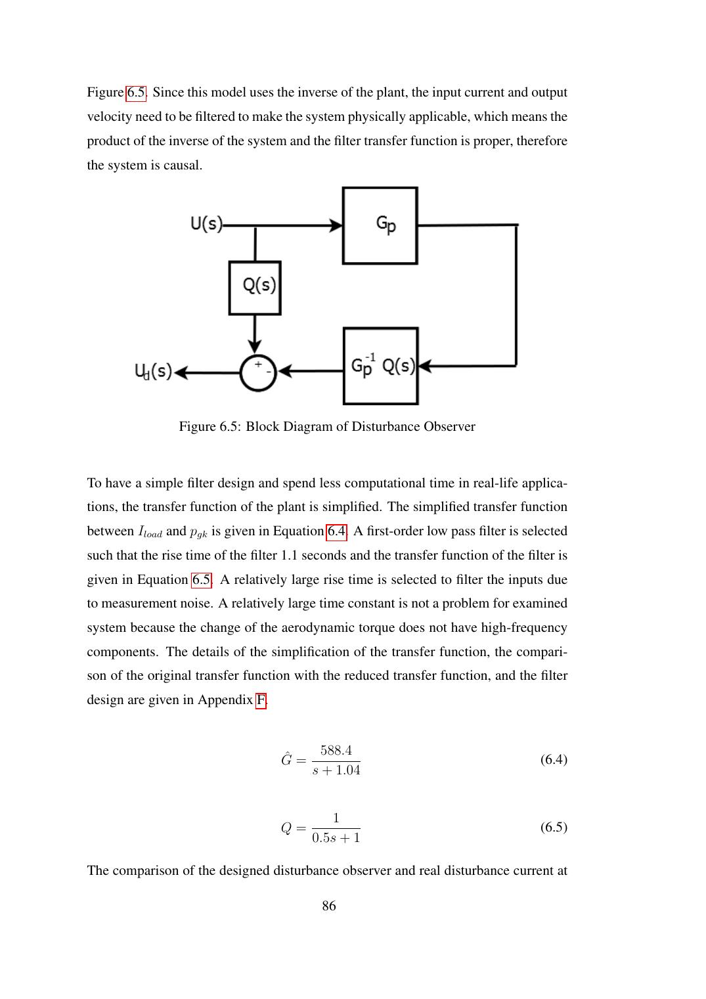
| Element | Value | ID |
|---|---|---|
| Inner velocity loop | PI · 0.29 + 7.82/s · 33.6 Hz | G9 |
| Outer position loop | P · gain 29.7 · 6.2 Hz | G8 |
| Settling (2 % band) | 0.103 s outer · ≈ 19 ms inner | G10 |
| Loop rate | 1 kHz, single precision | G13 H4 |
| Observer filter | Q = 1/(0.5s+1), corner ≈ 0.32 Hz | G14 |
| Anti-windup | clamping, re-evaluated against the live limit every cycle | G12 |
| Overshoot spec | ≤ 10 % of step, never past δ = 0.1π rad | G11 |
The budget closes from below with 26 % margin — but it is a statement about GNSS availability, not about inertial grade.
| Term | 1σ | What it rests on |
|---|---|---|
| GNSS position at impact | 3.0 m | multi-constellation single frequency, spin-tolerant aperture (spin-induced C/N₀ loss included) N3 |
| IMU + filter residual | 2.0 m | tactical MEMS on the de-spun ring, continuous aiding N6 N8 |
| Time sync + lever arm | 1.0 m | single hardware clock, stamps at conversion ≤ 100 µs H6 |
| RSS | 3.7 m | against the 5 m allocation in the error budget — ≈ 26 % margin N1 |
The conditionality worth saying out loud. Unaided, an attitude error of just 0.1° mis-resolving the drag deceleration gives a phantom 0.09 m/s² that integrates to ≈ 110 m over 50 s. The 5 m line holds while the receiver tracks, so the outage tolerance is a bounded requirement, not a graceful-degradation sentence — and anti-jam GNSS with INS coasting, not a seeker, is the GPS-denied answer N4 X17.
Three magnetic disturbances share the nose with the magnetometer and the receiver. Each is a function of something the kit already measures, so each is rejected with signals that already exist F15:
| Disturbance | Mechanism |
|---|---|
| Rotating magnet field at 1 234–2 131 Hz (7 pole pairs × the relative rotation) | Coherent notch locked to the measured relative rotation — the same signal the limit laws read |
| Coil-current field, drifting with flight phase | Compensated against measured coil current in the in-flight calibration model — which is exactly what the ring-angle spec asked for |
| Converter switching harmonics (the only broadband source) | Specified: ≥ 100 kHz with controlled edge rate and L-band attenuation to the GNSS threshold |
And the negative result, which is the honest half: for the magnetometer the interference and the measurand share the same band and the same space, so shielding cannot separate them. The answer is spectral and temporal, and it costs no new hardware. If the magnetometer ever proves unworkable, the priced fallback (pre-launch alignment plus gyrocompassing) costs ≈ 4 m of CEP — 27.9 m instead of 23.9, margin 7 % instead of 20 % G6.
Seven lines of 1σ allocations, combined in quadrature, converted to a CEP. The largest single bar is the guidance model's own propagation error.
| Line | 1σ | Note | ID |
|---|---|---|---|
| Navigation at impact | 5 | 3.7 m derived below the allocation | N1 |
| Guidance and control | 17 | decomposes as follows | G4 |
| IPP propagation + model | 13 | must include the always-on force and the phasor wobble | G4 |
| Ring-angle direction | 9.1 | 1.28° (1σ): 1.0° absolute + 0.8° relative | G5 G6 |
| Actuation and loop lag | 6 | settling and tracking error | G11 |
| Meteo residual | 5 | forecast error over the remaining flight only | G4 |
| Ballistic / aero model | 8 | coefficient uncertainty, carried explicitly | G4 |
| Fuze and detonation | 3 | small at this calibre | G4 |
| RSS → CEP = 1.1774 σ | 20.3 → 23.9 m | 20 % margin under the 30 m claim | G4 |
Two structural notes. The muzzle-velocity residual is absorbed into the navigation state — under continuous prediction an already-incurred velocity error is measured, not predicted. And the two model-error terms (13 m and 8 m) are correlated, so the Monte-Carlo campaign samples them with a stated correlation instead of assuming independence (risk 16) R5.
Because the requirement is a 30 m figure, the published result is CEP and the fraction of rounds breaching 30 m, per condition. A median 20 % inside the claim is not the same as meeting it.
Every design has the places where it is nearly wrong. Here are ours, with the number in each case.
| Margin | The number | Why it is thin | What would relieve it | ID |
|---|---|---|---|---|
| Correction authority | 1.11 : 1 | 407 m of correction needed to capture 80 % of the unguided population against 450 m available from 20 N over the 45 s terminal window. And 450 m assumes continuous full-force, which the gate refutes — the true figure is worse and unquantified until the campaign runs. | More force via cant (costs dissipation), or a lower capture fraction (67 % at 15 N) | M7 C8 |
| Apogee torque | 1.7 : 1 | Taero = 0.1706 N·m against a 0.10 N·m friction budget. Above a measured friction of 0.1567 N·m the architecture has no controllable window at all. | Bearing selection and preload discipline; the flat-friction spec; rig measurement | C12 C13 |
| End-of-flight transient authority | −11 % | At 86.5 s the symmetric criterion wants 5.64 A while ≈ 5 A is available. Holding is unaffected; transient response is short exactly where the guidance demand is falling. | Low-relative-speed current capability, or control-pair cant | C9 C18 |
| Stability at the envelope corner | 5 % of CMα | The conservative corner clears the Sg floor of 1.3 by 5 %, and that 5 % is the canard allowance there. The reference inertia pair would have flattered this. | Canard sizing discipline (cant over area), and the P6 re-baseline of the real shell | S1 S2 |
| Guidance window floor | q ≈ 23 kPa | The span-capped canards cannot make 18.1 N below it. The window is narrower than the force profile alone suggests, against an already-thin authority margin. | Cant angle first (it buys force at no stability cost); chord only weakly | C31 C43 |
| Canard sizing freedom | k ∈ (0.59, 0.89) | The control pair must sit within ≈ ±20 % of the reference's size to satisfy the apogee floor and the descent ceiling at once. | A lower-friction bearing widens the window directly | C12 |
| Navigation conditionality | 110 m per 0.1° | Unaided, the budget is two orders of magnitude away from its allocation. The 5 m line is a GNSS-availability claim. | Bounded outage tolerance (N4, owed), anti-jam aperture (N5) | N1 N4 |
| Kit mass | 2× over budget? | The CAD's measured rollup is 2.7–4.8 kg against a 1.4 kg benchmark — the newest and largest open item, and it moves the setback load with it (slide 34). | Aluminium structure, ring-diameter trade (C44 axial-flux), retention redesign | P9 C40 |
The architecture's hardest problem is not the guidance. It is that holding the ring is a kilowatt-class load that must leave the kit in 90 seconds.
Holding the ring against Taero at full body spin absorbs P = Taero × ωbody — 2.92 kW peak, ≈ 121 kJ integrated over the flight C42. It is not avoidable: 18.1 N of guidance force sets cant ≥ 10°, cant sets Taero, and Taero × ω is the power. The reference bench rig scaled body spin 21.6× down, which is why it never saw this C43.
| Route | Why it fails |
|---|---|
| Store it | 1.5 F at 400 V (7.5 F at the 180 V bus): will not fit, will not survive 15 000 g |
| Absorb it in the kit's metal | 134–179 K rise in the kit's own 1.5–2.0 kg; holding 100 K would need ≈ 2.7 kg against a 1.4 kg budget |
| Blow it into the airstream | ≈ 350 W realisable: 26 % of the integral and 12 % of the peak |
| Conduct it into the shell | 121 kJ raises 45 kg of steel by 5.8 K (asymptote; 25–35 K on the flight-time participating mass of kit + nose). The shell is effectively an infinite sink — so the requirement becomes an interface, not a radiator W7 |